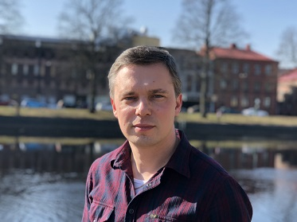

Senior fullstack utvecklare
Halmstad
Kunskaper
C#
ASP .Net Core
React
Angular
JavaScript/TypeScript
HTML5
CSS
SQL Server
Azure
VB .Net
Språk
Svenska
Engelska
Ryska
Ukrainska
Arbetar med utveckling av kundanpassade system för flera olika kunder, inklusive vidareutveckling och underhåll av äldre lösningar samt hantering av inkommande supportärenden. Arbetet omfattar hela utvecklingskedjan: Design och utveckling av API:er, databaslager och frontend (Razor/Blazor, React, Angular), integration med externa API:er och tredjepartstjänster, bygg- och deployflöden (CI/CD), teknisk dokumentation, planering, estimering och kunddialog. Handledare för en praktikant under en längre period. Teknikstacken inkluderar: C#, .NET, SQL, Razor/Blazor, React, Angular, JavaScript, TypeScript, Azure och Azure DevOps.
Arbetade med utveckling av användargränssnitt för Anybus Gateway- och Wireless-produkter med hjälp av Angular och TypeScript. Utvecklade en demowebbportal där kunder kunde testa olika produktgränssnitt – utvecklad med .NET, Angular, SQL-databas och hostad i AWS. Utöver nyutveckling arbetade jag också med underhåll och vidareutveckling av äldre projekt. Var även teamets representant i HMS cybersäkerhetsgrupp i rollen som Security Advisor.
Under mina LIA-perioder deltog jag både i skolans projektuppgifter och i teamets dagliga utvecklingsarbete. Jag avslutade praktiken med ett examensarbete där jag, på uppdrag av HMS, ansvarade för att porta en äldre applikation från .NET Framework 4.6 till .NET 5.
På Tönnersjö Trädgård AB jobbade jag som produktionsledare med ett brett ansvarsområde: drift- och tekniskt ansvarig för alla datorer, nätverk, växthusdatorer, PLC, värmesystem, trädgårdsmaskiner mm. Elinstallation, service, felsökning och reparation. Planering, lager- och orderhantering, logistik. Har utvecklat ett containermarkeringssystem för utleveranser av varor vidare till blomsterterminalen i Helsingborg. Ett kassasystem för företagsbutik som är integrerat med Visma Administration 2000.
Min första arbetslivserfarenhet efter att jag flyttade till Sverige. Arbetade med varierande arbetsuppgifter inom trädgårds- och odlingsverksamheten.
Datorservice, utveckling av servicehanteringssystem.
En yrkeshögskoleutbildning med fokus på utveckling av moderna webbsystem med hjälp av .NET-plattformen. Utbildningen omfattade backend- och frontendutveckling, databaser, webbteknik samt projektmetodik. Examensarbete genomfördes i samarbete med företag som en del av utbildningen.
Taurida Agrotechnical Academy, Melitopol, Ukraina. Utbildningen var inriktad på maskinteknik med fokus på jordbrukets mekanisering, inklusive konstruktion, drift och underhåll av lantbruksmaskiner. Examensarbete genomfördes som en del av utbildningen.
Taurida Agrotechnical Academy, Melitopol, Ukraina. Utbildningen var inriktad på maskinteknik med fokus på jordbrukets mekanisering, inklusive konstruktion, drift och underhåll av lantbruksmaskiner. Även grundläggande kurser inom Further Mathematics, elteknik, kemi, ekonomi och datateknik ingick i utbildningen. Examensarbete genomfördes som en del av studierna.
Jag innehar B-körkort.